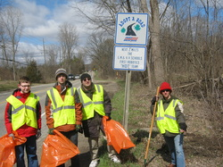

Team Organization
A Board of Directors, with associated by-laws, handles HOT team governance, financial commitments, personnel, and sponsors, and ensures continuity of team dynamics. The Board is comprised of representatives of parents, schools, mentors, and sponsors, serving 2-3 year terms, staggered to keep continuity.

Community Service Season
The entire HOT Team participates in many community service
activities.The community service season begins right after team
selection (or after previous season competitions are over for returning
members) and runs to the beginning of the next build season. The team
engages in community service to build on the inspiration and excitement
of FIRST by helping in the community, getting the word out that science
and technology are worth supporting and celebrating, and fostering
continued growth in FIRST.We mentor FIRST Lego League and FTC teams and
provide assistance to other FIRST Robotics teams. We give presentations
and lead robotics-related workshops to local and state governments,
schools and community groups. We are involved in many local community
events, participating in roadside clean-up and river clean-up days,
marching in parades, and helping with community event logistics. Our
presence in the community is a very important aspect of the HOT team.
Build Season Groups
Build Season Groups The build season is a six-week-long period starting the first Saturday of January, during which the curent season’s robot game is unveiled, and continues as the robot is designed, developed and built. The team works at the General Motors Milford Proving Ground where we are allowed use of the machine shop, conference rooms, and computers.
Engineering & Computer Aided Design Students work with mentors using SolidWorks software to produce 2D and 3D designs for the HOTBOT, the HOT cart and CASEY.
Mechanical Build Students work with mentors in the GMPG machine shop. Components for the HOTBOT, the HOT cart, practice playing field and CASEY are produced on the lathe, vertical mill, CNC and water jet
Electronics & Controls Students work with mentors to wire and create control systems for the HOTBOT. They experience everything from DC circuits to feedback control with potentiometers, encoders, digital cameras, accelerometers, and gyroscopes. FIRST uses an industry standard National Instruments roboRIO controls platform.
Programming & Controls Students work with mentors to program the control system behavior of the HOTBOT and CASEY. Coding is done in C++ and/or LabVIEW. The HOTBOT must have instructions for both operator-controlled and autonomous behavior.
Communications Students work with mentors to document, create, and market the imagery of the HOT team. Students photgraph and create videos of team activiies, and design and update the HOT Team’s website, and other social media sites such as Facebook, Twitter, and YouTube. Animation Students work with mentors to create animations using industry standard software.
Field Build, Crate, Truck & Trailer Outfit Students build a partial competition field to be used for robot-driving practice and robot development. Students also prepare the robot for travel to and from competitions and other events.
Competition Season Groups
The competition season begins in March with the first local competition and ends in mid-April after the Championship Event held in St. Louis, Missouri. The team typically participates in two to three district competitions, the Michigan State Championship (if we qualify) and the FIRST World Championship Event. Note that team members must satisfy all participation requirements to be eligible to travel with the team.
Drive Team The drive team manipulates the robot and plays the game during competitions. The drive team usually consists of 2 drivers and a human player. This team will be chosen for their skill, their ability to listen to the drive team coach, their ability to execute the team’s strategy, and their demonstration of CoopertitionTM and Gracious ProfessionalismTM under pressure.
Pit Crew This team is responsible for keeping our robot in working order during the competition and helping other teams maintain and troubleshoot problems with their robots. This team consists of students who have demonstrated a willing attitude, have read and have ready knowledge of all the FIRST robot rules, keep cool under pressure, demonstrate an orderly work habit, and have detailed knowledge of every subsystem on the robot. Broad knowledge of the robot as an electromechanical system is essential for diagnosing problems. The pit crew must demonstrate good communication skills in order to effectively describe our robot to judges at competitions.
\
Strategy & Scouting This team is responsible for determining the best strategy for the competition and communicating it to the drive team coach. All team members who are not part of the drive team and pit crew will be responsible for scouting. They are responsible for scouting other teams to gain information about the robots abilities and success rates. They will organize this information so that it is easily accessible and ready for use during the competition.